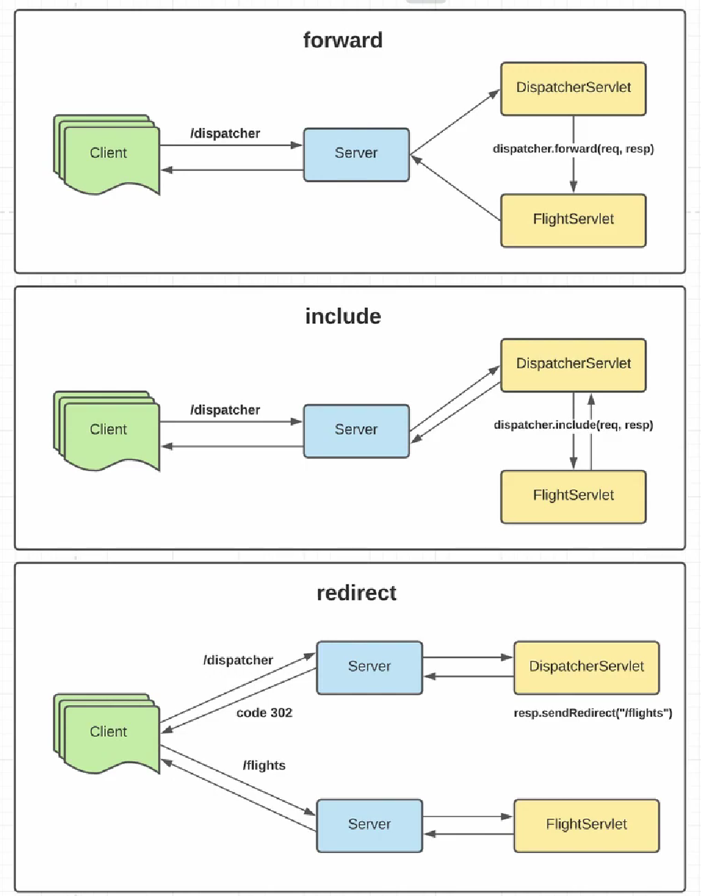

Перенаправление запросов - это когда мы приняли наш запрос на одном сервлете и каким-то образом понимаем, что нам нужна помощь других сервлетов для обработки этого запроса. И в случае с Apache Tomcat у нас есть три варианта того, как можем перенаправить запрос:
localhost:8080/dispatcher. Следовательно,
у нас есть маппинг на этот URL, на сервлет DispatcherServlet. На этом сервлете мы понимаем, что
нам недостаточно кода, либо по каким-то другим соображением понимаем, что нужно перенаправить запрос другому
сервлету. Например, на FlightServlet. Для этого мы у специального объекта
RequestDispatcher
вызываем метод .forward() (dispatcher.forward(req, resp)) и
полностью перенаправляем
запрос на другой сервлет и он уже возвращает ответ серверу, а тот в свою очередь ответ клиенту.
DispatcherServlet,
опять понимаем, что не можем по каким-то причинам полностью обработать этот запрос сами и делаем запрос по
специальному методу на другой сервлет (FlightServlet). В этом случае, FlightServlet
возвращает ответ не серверу, а обратно DispatcherServlet таким образом, получается, что включаем
часть ответа от FlightServlet в DispatcherServlet. И уже он возвращает ответ серверу,
а тот в свою очередь клиенту.
localhost:8080/dispatcher и сервер маппит этот путь на наш
DispatcherServlet и в этом сервлете и объекта типа Response вызываем
.sendRedirect() на URL /flights (resp.sendRedirect("/flight")).
И происходит следующее: сервер возвращает ответ со статус-кодом 302 (перенаправление на URL, который
указан в заголовке ответа). Берём этот заголовок, извлекаем оттуда URL, на который должны перейти и клиент
делает новый запрос на сервер по-новому URL, следовательно, клиент даже видит, что у него URL изменился в
отличие от forward и include. И после второго запроса на /flights наш сервер сразу направляет
на другой сервлет FlightServlet, он уже обработал запрос и вернул серверу ответ, а сервер вернул
ответ клиенту.
@WebServlet("/dispatcher")
public class DispatcherServlet extends HttpServlet {
@Override
protected void doGet(HttpServletRequest req, HttpServletResponse resp) throws ServletException, IOException {
req.getRequestDispatcher("/flights").forward(req, resp);
System.out.println();
}
}
@WebServlet("/flights")
public class FlightServlet extends HttpServlet {
private final FlightService flightService = FlightService.getInstance();
@Override
protected void doGet(HttpServletRequest req, HttpServletResponse resp) throws ServletException, IOException {
// Устанавливаем заголовки
resp.setContentType("text/html");
resp.setCharacterEncoding(StandardCharsets.UTF_8.name());
// Отправляем пользователю список перелётов
try (PrintWriter printWriter = resp.getWriter()) {
printWriter.write("<\h1>Список перелётов:<\/h1>");
printWriter.write("<\ul>");
flightService.findAll().stream().forEach(flightDto -> {
printWriter.write("""
<\li>
<\a href="/tickets?flightId=%d">%s<\/a>
<\/li>
""".formatted(flightDto.getId(), flightDto.getDescription()));
});
printWriter.write("<\/ul>");
}
}
}
Как только мы выходим из OutputStream в FlightServlet, мы его сразу закрываем, то именно
после закрытия OutputStream сразу происходит получение ответа нашим клиентом. Это очень важный момент.
Как только закрыли OutputStream с которым связаны с клиентом нашим, то сразу же клиент получает
response и ничего не можем с ним сделать в DispatcherServlet.
Даже если мы в DispatcherServlet продолжим писать что-то:
@Override
protected void doGet(HttpServletRequest req, HttpServletResponse resp) throws ServletException, IOException {
req.getRequestDispatcher("/flights").forward(req, resp);
PrintWriter writer = resp.getWriter();
writer.write("Hello 2");
System.out.println();
}
То мы все равно ничего не запишем в выходной поток. Конечно, в случае .forward() мы бы ничего и не
записали в любом случае. Но если используем include, тогда это имеет значение. Потому что тогда мы сможем
дописать в выходной поток DispatcherServlet то, что нам надо.
Поэтому, для того чтобы не закрывать OutputStream - просто не оборачиваем в try-catch.
Тогда сможем в DispatcherServlet дописать то, что нам нужно. В таком случае не будет возвращен ответ
клиенту из FlightServlet сразу же после того, как вышли из блока try-catch.
@WebServlet("/flights")
public class FlightServlet extends HttpServlet {
private final FlightService flightService = FlightService.getInstance();
@Override
protected void doGet(HttpServletRequest req, HttpServletResponse resp) throws ServletException, IOException {
// Устанавливаем заголовки
resp.setContentType("text/html");
resp.setCharacterEncoding(StandardCharsets.UTF_8.name());
// Отправляем пользователю список перелётов
PrintWriter printWriter = resp.getWriter();
printWriter.write("<\h1>Список перелётов:<\/h1>");
printWriter.write("<\ul>");
flightService.findAll().stream().forEach(flightDto -> {
printWriter.write("""
<\li>
<\a href="/tickets?flightId=%d">%s<\/a>
<\/li>
""".formatted(flightDto.getId(), flightDto.getDescription()));
});
printWriter.write("<\/ul>");
}
}
@WebServlet("/dispatcher")
public class DispatcherServlet extends HttpServlet {
@Override
protected void doGet(HttpServletRequest req, HttpServletResponse resp) throws ServletException, IOException {
resp.setContentType("text/html");
resp.setCharacterEncoding(StandardCharsets.UTF_8.name());
req.getRequestDispatcher("/flights").include(req, resp);
PrintWriter writer = resp.getWriter();
writer.write("Hello 2");
System.out.println();
}
}
Теперь, что мы запишем до или после include имеет значение, потому что, как видим на рисунке, include возвращает
выполнение нашему DispatcherServlet'у и можем продолжить писать выходной поток в response.
Все заголовки, установленные в FlightServlet - они не работают, потому что включили только часть
response нашего body. Заголовки должны указывать в DispatcherServlet, потому что он главный за
ответ нашему клиенту.